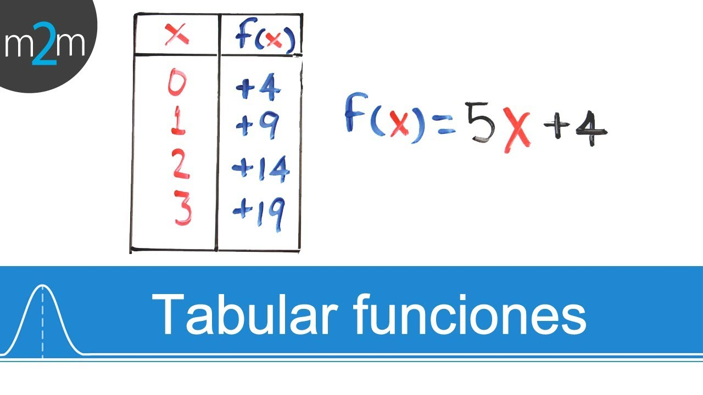

Metodo de bisección
En matemáticas, el método de bisección es un algoritmo de búsqueda de raíces que trabaja dividiendo el intervalo a la mitad y seleccionando el subintervalo que tiene la raíz.
La bisección
Este método se basa en un algoritmo de búsqueda de raíces que trabaja dividiendo el intervalo a la mitad y seleccionando el intervalo que tiene la raíz para posteriormente seleccionar el subintervalo que tiene la raíz. Se basa en el teorema de cálculo del valor intermedio. El método de bisección sigue los siguientes pasos:
1) Valores Iniciales
Encontrar los valores iniciales 𝑥𝑎 ,𝑥𝑏 tales que 𝑓(𝑥𝑎) ,𝑓( 𝑥𝑏) tienen signos opuestos, es decir: 𝑓(𝑥𝑎) . 𝑓( 𝑥𝑏), esto se puede lograr por medio de la tabulación de ambas funciones
2) La primera aproximación a la raíz se toma igual al punto medio entre 𝑥𝑎 𝑦 𝑥𝑏 :

3) Se evalúa 𝑓(𝑥𝑟). Forzosamente debemos caer en uno de los siguientes casos:
𝑓(𝑥𝑎) . 𝑓( 𝑥𝑟)>0
En este caso, tenemos que 𝑓(𝑥𝑟) 𝑦 𝑓( 𝑥𝑎) tienen el mismo signo, y de aquí que 𝑓(𝑥𝑟) 𝑦 𝑓( 𝑥𝑏) tienen signos opuestos.Por lo tanto la raíz se encuentra en el intervalo [𝑥𝑟 ,𝑥𝑏] en el otro caso se da la situación:
𝑓(𝑥𝑎) 𝑦 𝑓( 𝑥𝑟)=0
En este se tiene que 𝑓(𝑥𝑟)=0 y por lo tanto ya localizamos la raíz. El proceso continúa con el nuevo intervalo, hasta que el resultado sea menor al error absoluto solicitado:
|𝑋𝑟𝑛𝑢𝑒𝑣𝑜−𝑋𝑟𝑎𝑛𝑡𝑒𝑟𝑖𝑜𝑟/𝑋𝑟𝑛𝑢𝑒𝑣𝑜|∗100%
.png)
.png)
.png)
.png)
.png)
.png)
.png)
.png)
Conclusión
El método de bisección es uno de lo más fáciles de aplicar a la hora de encontrar la raíz de la función, siempre tomando en cuenta que el método solo se puede aplicar si se cumplen las condiciones necesarias